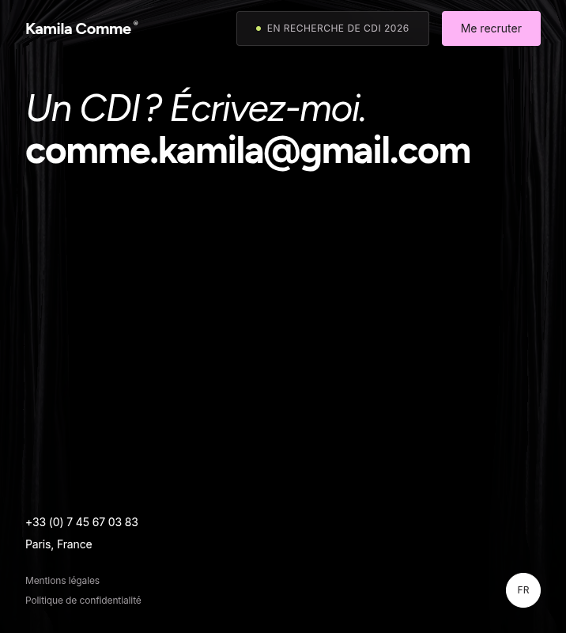
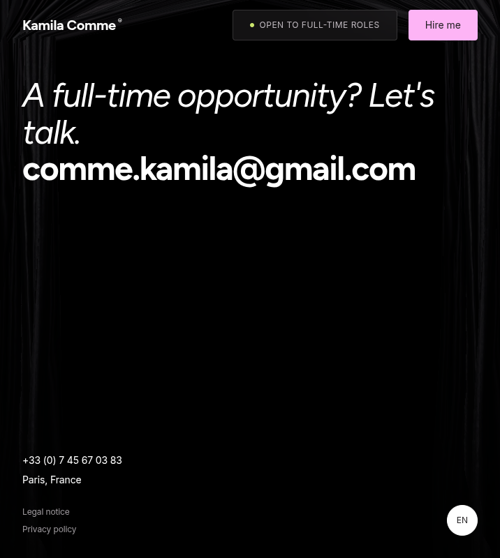
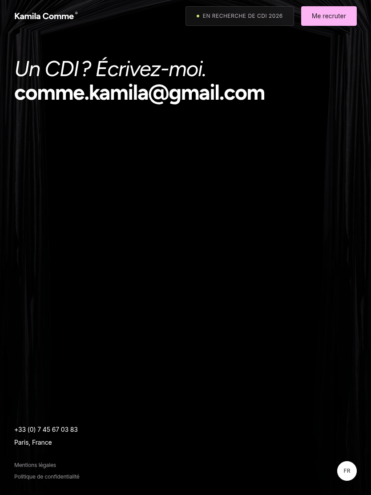
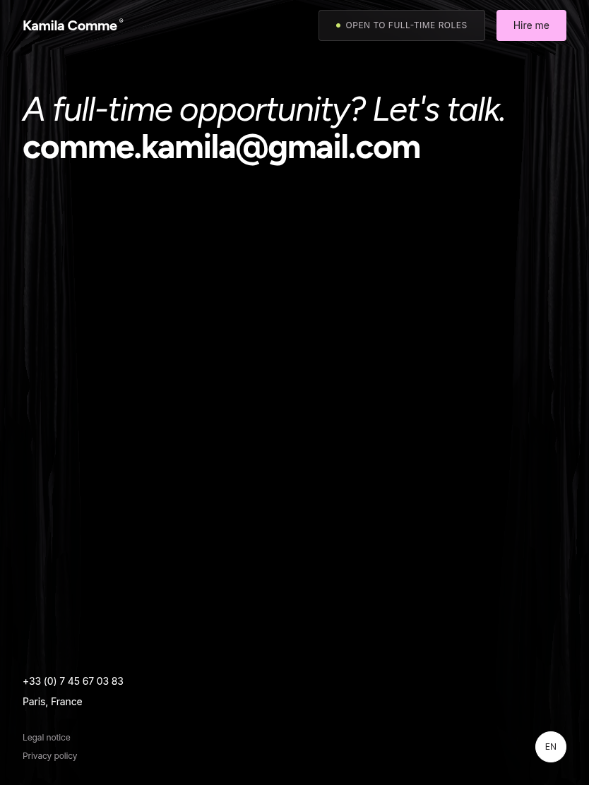
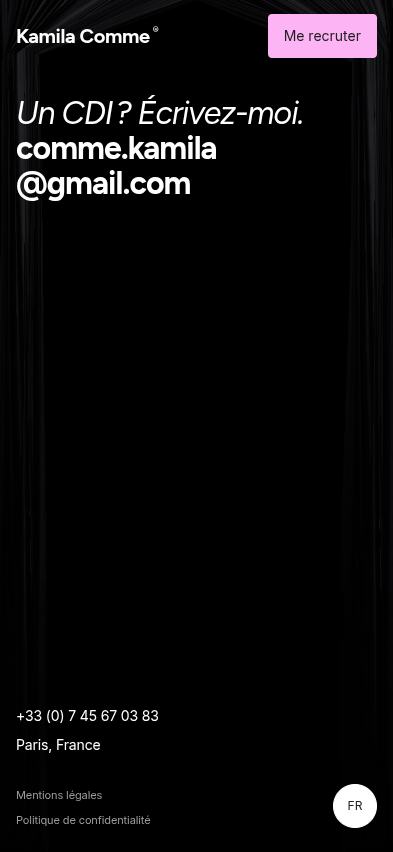
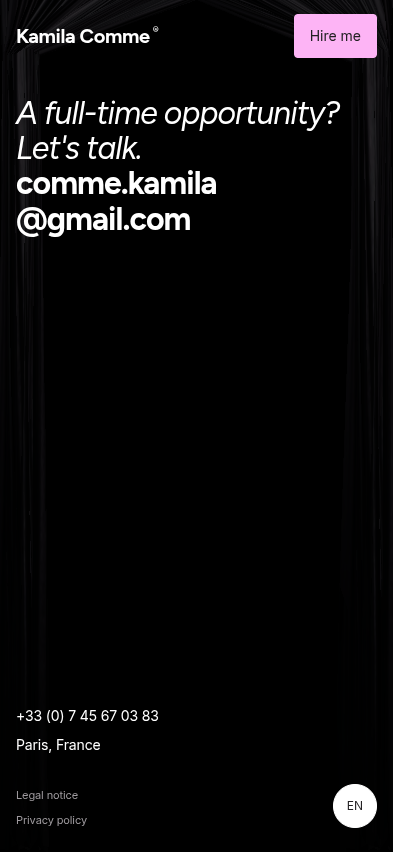
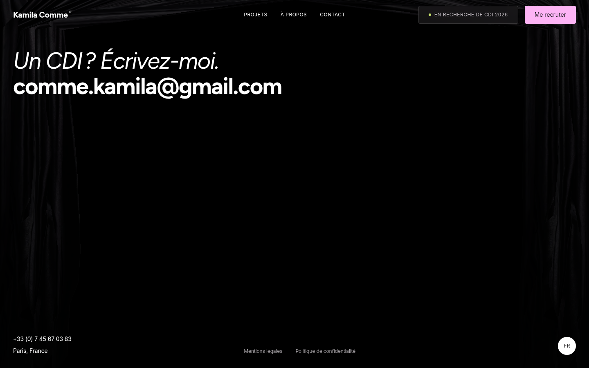
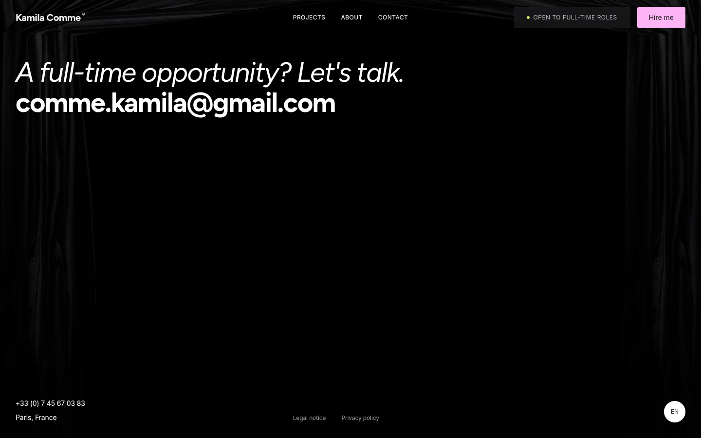

Current Chromium captures show the requested behavior: links stack vertically across tablet and mobile profiles, and remain horizontal on desktop. French and English use the same layout rule. The Footer curtain uses its existing reduced-motion static frame for consistent screenshots; no curtain or Footer styling was changed for these captures.








Exact Chromium element bounds and computed flex directions are in measurements.json.